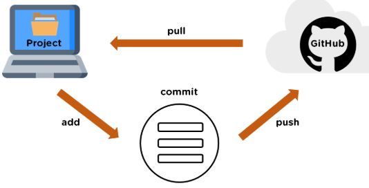
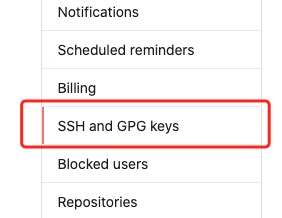

Git リモートリポジトリ (Github)
Git は SVN のように中央サーバーがあるわけではありません。
現在私たちが使用している Git コマンドはすべてローカルで実行されます。Git を通じてコードを共有したり、他の開発者と共同作業したい場合は、他の開発者が接続できるサーバーにデータを置く必要があります。
この例では、リモートリポジトリとして Github を使用しています。先に私たちのGithub 簡明チュートリアル。

リモートリポジトリの追加
新しいリモートリポジトリを追加するには、将来参照しやすいように簡単な名前を指定します。コマンド形式は次のとおりです。
git remote add [shortname] [url]
この例では、リモートリポジトリとして Github を例にしています。Github をお持ちでない場合は、公式サイトでhttps://github.com/登録できます。
ローカル Git リポジトリと GitHub リポジトリ間の転送は SSH で暗号化されているため、認証情報を設定する必要があります：
以下のコマンドで SSH キーを生成します：
$ ssh-keygen -t rsa -C "youremail@example.com"
後ろのyour_email@youremail.comを Github に登録したメールアドレスに変更します。その後、パスの確認とパスワードの入力を求められますが、ここではデフォルトのまま Enter キーを押し続ければ問題ありません。
成功すると、~/の下に生成される.sshフォルダの中に入って、開いてid_rsa.pub、その中身をコピーしますkey。
$ ssh-keygen -t rsa -C "12345678@qq.com" Generating public/private rsa key pair. Enter file in which to save the key (/Users/tianqixin/.ssh/id_rsa): Enter passphrase (empty for no passphrase): # 直接回车 Enter same passphrase again: # 直接回车 Your identification has been saved in /Users/tianqixin/.ssh/id_rsa. Your public key has been saved in /Users/tianqixin/.ssh/id_rsa.pub. The key fingerprint is: SHA256:MDKVidPTDXIQoJwoqUmI4LBAsg5XByBlrOEzkxrwARI 12345678@qq.com The key's randomart image is: +---[RSA 3072]----+ |E*+.+=**oo | |%Oo+oo=o. . | |%**.o.o. | |OO. o o | |+o+ S | |. | | | | | | | +----[SHA256]-----+
Github に戻り、Account => Settings（アカウント設定）に入ります。

左側でSSH and GPG keysを選択し、次にNew SSH keyボタンをクリックします。title にタイトルを設定します。任意の名前で構いません。お使いのPCで生成した key を貼り付けます。


追加に成功すると、画面は次のようになります。

成功したかどうかを確認するため、次のコマンドを入力します：
$ ssh -T git@github.com The authenticity of host 'github.com (52.74.223.119)' can't be established. RSA key fingerprint is SHA256:nThbg6kXUpJWGl7E1IGOCspRomTxdCARLviKw6E5SY8. Are you sure you want to continue connecting (yes/no/[fingerprint])? yes # 输入 yes Warning: Permanently added 'github.com,52.74.223.119' (RSA) to the list of known hosts. Hi tianqixin! You've successfully authenticated, but GitHub does not provide shell access. # 成功信息
次のコマンドは、Github に正常に接続できたことを示しています。
その後、ログインして" New repository "をクリックします。下図のようになります：

次に、Repository name に runoob-git-test（リモートリポジトリ名）を入力し、その他はデフォルト設定のままにして、"Create repository" ボタンをクリックすると、新しい Git リポジトリの作成が成功します。

作成が成功すると、次の情報が表示されます：

上記の情報は、このリポジトリから新しいリポジトリをクローンできること、またローカルリポジトリの内容を GitHub リポジトリにプッシュできることを示しています。
ここで、GitHub の指示に従って、ローカルのリポジトリでコマンドを実行します：
$ mkdir runoob-git-test # 创建测试目录 $ cd runoob-git-test/ # 进入测试目录 $ echo "# 菜鸟教程 Git 测试" >> README.md # 创建 README.md 文件并写入内容 $ ls # 查看目录下的文件 README $ git init # 初始化 $ git add README.md # 添加文件 $ git commit -m "添加 README.md 文件" # 提交并备注信息 [master (root-commit) 0205aab] 添加 README.md 文件 1 file changed, 1 insertion(+) create mode 100644 README.md # 提交到 Github $ git remote add origin git@github.com:tianqixin/runoob-git-test.git $ git push -u origin master
以下のコマンドは、私が提供したコマンドではなく、あなたが Github で新しいリポジトリを作成した場所のものをコピーしてください。Github のユーザー名とリポジトリ名が異なるためです。
次に、Github で作成したリポジトリに戻ると、ファイルが Github にアップロードされているのが確認できます：

現在のリモートリポジトリを確認する
現在設定されているリモートリポジトリを確認するには、次のコマンドを使用します：
git remote
例
$ git remote origin $ git remote -v origin git@github.com:tianqixin/runoob-git-test.git (fetch) origin git@github.com:tianqixin/runoob-git-test.git (push)
実行時に -v パラメータを追加すると、各エイリアスの実際のリンク先アドレスも確認できます。
リモートリポジトリを取得する
Git には、リモートリポジトリの更新を取得するためのコマンドが2つあります。
1. リモートリポジトリから新しいブランチとデータをダウンロードします：
git fetch
このコマンドを実行した後、git merge を実行して、リモートブランチを現在のブランチにマージする必要があります。
2. リモートリポジトリからデータを取得し、現在のブランチにマージを試みます：
git merge
このコマンドは、git fetchの直後に実行し、git mergeリモートブランチを任意のローカルブランチにマージする操作です。

リモートリポジトリを設定済みで、更新されたデータを取得したい場合は、まず次のコマンドを実行します：git fetch [alias]Git に、あなたが持っていないデータを取得させます。その後、次のコマンドを実行できます：git merge [alias]/[branch]これにより、サーバー上の更新（この時点で誰かがサーバーにプッシュしたと仮定）を現在のブランチにマージします。
次に、Github 上の" README.md" をクリックして、オンラインで編集します：

その後、ローカルで変更を同期します。
$ git fetch origin remote: Counting objects: 3, done. remote: Compressing objects: 100% (2/2), done. remote: Total 3 (delta 0), reused 0 (delta 0), pack-reused 0 Unpacking objects: 100% (3/3), done. From github.com:tianqixin/runoob-git-test 0205aab..febd8ed master -> origin/master
上記の情報 "0205aab..febd8ed master -> origin/master" は、master ブランチが更新されたことを示しています。次のコマンドで更新をローカルに同期できます：
$ git merge origin/master Updating 0205aab..febd8ed Fast-forward README.md | 1 + 1 file changed, 1 insertion(+)
README.md ファイルの内容を確認します：
$ cat README.md # 菜鸟教程 Git 测试 ## 第一次修改内容
リモートリポジトリへのプッシュ
新しいブランチとデータをリモートリポジトリにプッシュするコマンド：
git push [alias] [branch]
上記のコマンドは、[branch] ブランチを [alias] リモートリポジトリの [branch] ブランチとしてプッシュします。例は次のとおりです。
$ touch runoob-test.txt # 添加文件 $ git add runoob-test.txt $ git commit -m "添加到远程" master 69e702d] 添加到远程 1 file changed, 0 insertions(+), 0 deletions(-) create mode 100644 runoob-test.txt $ git push origin master # 推送到 Github
Github リポジトリに戻ると、ファイルがすでにプッシュされているのが確認できます：

リモートリポジトリの削除
リモートリポジトリを削除するには、次のコマンドを使用します：
git remote rm [别名]
例
$ git remote -v origin git@github.com:tianqixin/runoob-git-test.git (fetch) origin git@github.com:tianqixin/runoob-git-test.git (push) # 添加仓库 origin2 $ git remote add origin2 git@github.com:tianqixin/runoob-git-test.git $ git remote -v origin git@github.com:tianqixin/runoob-git-test.git (fetch) origin git@github.com:tianqixin/runoob-git-test.git (push) origin2 git@github.com:tianqixin/runoob-git-test.git (fetch) origin2 git@github.com:tianqixin/runoob-git-test.git (push) # 删除仓库 origin2 $ git remote rm origin2 $ git remote -v origin git@github.com:tianqixin/runoob-git-test.git (fetch) origin git@github.com:tianqixin/runoob-git-test.git (push)<div style="display:none;"> <hr> <h2 id="git-coding">CODING リポジトリを使用する</h2> <blockquote><p>開発者にとって GitHub はもはや馴染み深いものであり、日頃の開発でコードを GitHub にホスティングするのはとても便利です。しかし、中国国内のユーザーはよく次のような問題に直面します。GitHub へのアクセス速度が遅すぎるということです。Alibaba Cloud や Tencent Cloud のホスト上でコードを clone する場合、ホストの帯域幅が十分でないと、clone はまさに亀の歩みのように遅くなります。また、パケットロスや接続切断などの問題もしばしば発生します。このような状況で、高速な Git サービスを体験したいなら、<a href='https://studio.dev.tencent.com/' target="_blank" rel="noopener noreferrer">Tencent Cloud 開発者プラットフォーム</a>を試してみてはいかがでしょうか。GitHub と比較して、CODING は無料の Git リポジトリを提供するだけでなく、無料のプライベートリポジトリも提供しています（無料の一般会員は10個のプライベートプロジェクト、512M の Git リポジトリ容量を利用できます）。さらに、CODING はプロジェクト管理、タスク管理、チーム管理、ファイル管理などの機能も無料で提供しており、非常に強力です。</p></blockquote> <p>次に、CODING プロジェクトを作成し、GitHub 上のコードを CODING に移行してみます。通常は、次の3つのステップに分かれます：</p> <ul><li>1、CODING プロジェクトを作成する</li><li>2、GitHub のコードをローカルに Pull する</li><li>3、ローカルで CODING リポジトリを関連付け、コードを CODING に Push する</li></ul><h3>CODING プロジェクトの作成：</h3> <p><a href='https://studio.dev.tencent.com/' target="_blank" rel="noopener noreferrer">Tencent Cloud 開発者プラットフォーム</a>にログインしてアカウントを登録し、プロジェクト管理ページでプロジェクトを作成します。この手順について詳しくは説明しません。必要に応じてプロジェクト名と説明を入力し、License の種類を選択するだけでOKです。License の選択については、こちらの記事を参照してください：<a target="_blank" href='http://www.ruanyifeng.com/blog/2011/05/how_to_choose_free_software_licenses.html' rel="noopener noreferrer">オープンソースライセンスの選び方</a>。プロジェクトの作成が完了したら、右側のメニューバーのコードタブでコードの管理・操作を行うことができます。</p><p> <img src='/images/ad/86879978.jpg.html' alt='' /></p><p> <img src='/images/ad/84518452.jpg.html' alt='' /></p> <h3>GitHub のコードをローカルに Pull：</h3> <p>GitHub にログインし、インポートしたいリポジトリを選択してリポジトリのアドレスをコピーし、ローカルでコマンドを実行して GitHub リポジトリのコードを取得します：</p><p> <img src='/images/ad/10346579.jpg.html' alt='' /></p> <pre>sudo git clone</pre> <h3>ローカルで CODING リポジトリを関連付け、コードを CODING に Push：</h3><p>まず、次のコマンドを実行します：<code>git remote -v</code></p><p> <img src='/images/ad/43989293.jpg.html' alt='' /></p><p> すると、現在の git がすでに1つのリモートリポジトリに関連付けられていることがわかります。</p><p> そこで、次のコマンドを実行して、CODING のリモートリポジトリを関連付けます（後ろのリポジトリアドレスは、あなたの CODING プロジェクトのアドレスに置き換える必要があります！） 最初のコマンドは既存のリポジトリの関連付けを削除するためのもので、後ろの2つのコマンドはリポジトリを CODING のアドレスに関連付け、コードを master ブランチに Push するためのものです。</p><pre> sudo git remote rm origin sudo git remote add origin https://git.coding.net/xxx/xxx.git sudo git push -u origin master</pre> <p>その後、もう一度 CODING プロジェクトのコード管理ページに入ると、先ほど Push したコードを確認できます。これで、GitHub 上のプロジェクトは CODING プラットフォームに完全に移行されました！</p><p> <img src='/images/ad/18357223.jpg.html' alt='' /></p> <h3>CODING リポジトリのパスワード不要の Push/Pull</h4><p>コードを CODING に移行した後、Push/Pull のたびにユーザー名とパスワードの入力を求められることに気づきます。これは、プロジェクトにまだ SSH Key が追加されておらず、ユーザー名/パスワード認証しかできないためです。 CODING は公開鍵認証の方法を提供しています。プロジェクト管理に入り、左側のタブで「公開鍵デプロイ」ボタンをクリックし、右側の「新規公開鍵デプロイ」をクリックします。</p><p> <img src='/images/ad/62119861.jpg.html' alt='' /></p><p>ローカルの公開鍵の内容を対応する場所に貼り付け、公開鍵に名前を付けます（ローカルマシンの公開鍵の確認・生成については、こちらの記事を参照してください：<a href='/w3cnote/view-ssh-public-key.html' target="_blank" rel="noopener noreferrer">ローカルマシンの ssh 公開鍵を確認し、公開鍵を生成する</a>）。「Push 権限を付与」にチェックを入れると、このマシンにコードを Push する権限を付与できます。</p><p> <img src='/images/ad/64498917.jpg.html' alt='' /></p><p>設定を保存したら、もう一度試してみます。この時点で、Push/Pull コードはユーザー名とパスワードの認証を必要としなくなります。これで、私たちのコードは完全に CODING プラットフォーム上で管理され、その便利さと速さを楽しみましょう！</p><p>ご不明な点がある場合は、<a href='https://dev.tencent.com/help/doc/cloud-studio' target="_blank" rel="noopener noreferrer">ヘルプドキュメント</a>をご参照ください。</p> <p>現在 CODING では、Cloud Studio ワークスペースをベースにした【私が最も好きな Cloud Studio プラグインコンテスト】を開催しています。活動公式サイト：<a href="https://studio.qcloud.coding.net/campaign/favorite-plugins/index" rel="noopener noreferrer" target="_blank">https://studio.qcloud.coding.net/campaign/favorite-plugins/index</a> にアクセスして、詳細情報をご覧ください。</p> </div> その他の拡張機能
leon
105***6491@qq.co
参考アドレス
git fetch origin masterする場合、その意味は「〜という名前のoriginリモートから、名前が〜のmasterブランチをローカルブランチへorigin/masterプルする」という意味です。コードをプルするので、当然リモート名とブランチ名の両方を指定する必要があるため、分けて書きます。git merge origin/masterする場合、その意味は「〜という名前のorigin/masterブランチを現在のブランチにマージする」という意味です。ブランチのマージですから、リモート名とは直接関係がなく、リモート名は出てきません。指定する必要があるのは、マージされる側のブランチです。git push origin masterする場合、その意味は「ローカルのmasterブランチをリモートoriginへプッシュする」という意味です。リモートとブランチに関わるため、当然分けて書く必要があります。git fetch origin master stable oldstable；git merge origin/master hotfix-2275 hotfix-2276 hotfix-2290；leon
105***6491@qq.co
参考アドレス
earhtnorth
ear***orth@163.com
ssh で gitHub にアクセスすると次のエラーが発生します：
解決方法：（GitHub を信頼できるホストリストに追加すると、アクセスに成功します）
earhtnorth
ear***orth@163.com